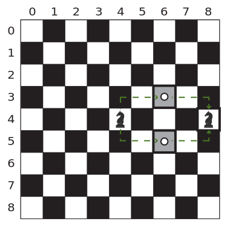
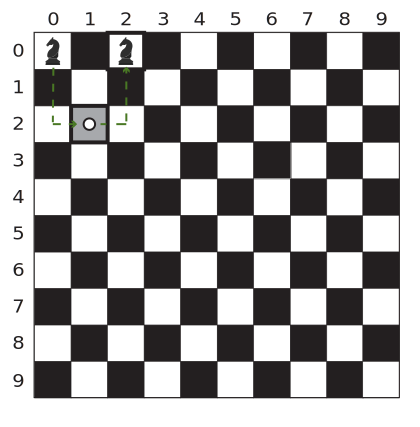
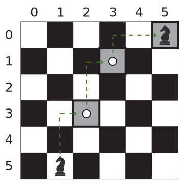

<section class="question-view__instruction"><div class="candidate-rich-text"><div id="9d1ts09pdpn-instruction"><style type="text/css">.ps-content-wrapper-v0 div { margin: 0 auto; overflow: auto; } .ps-content-wrapper-v0 div.preheader { display: none; } .ps-content-wrapper-v0 p { white-space: pre-wrap; padding-left: 4px; padding-right: 4px; padding-top: 0px; padding-bottom: 2px; } .ps-content-wrapper-v0 p.section-title { font-weight: bold; padding-bottom: 0px; } .ps-content-wrapper-v0 ol.plain-list, .ps-content-wrapper-v0 ul.plain-list { list-style-type: none; padding: 4px; } .ps-content-wrapper-v0 li { white-space: normal; margin-top: 4px; margin-bottom: 4px; } .ps-content-wrapper-v0 code { color: black; } .ps-content-wrapper-v0 pre { background-color: #f4faff; border: 0; border-radius: 2px; margin: 8px; padding: 10px; } .ps-content-wrapper-v0 figure { background-color: transparent; display: table; margin-top: 8px; margin-bottom: 8px; text-align: center; margin-left: auto; margin-right: auto; } .ps-content-wrapper-v0 figcaption { text-align: center; display: table-caption; caption-side: bottom; margin-top: 4px; margin-bottom: 4px; } .ps-content-wrapper-v0 img { width: auto; max-width: 100%; height: auto; } .ps-content-wrapper-v0 details { background-color: transparent; padding-left: 4px; padding-right: 4px; padding-top: 0px; padding-bottom: 2px; } .ps-content-wrapper-v0 details summary { background-color: #39424e; color: white; font-weight: bold; margin-top: 4px; margin-bottom: 4px; padding: 8px; } .ps-content-wrapper-v0 details div.collapsable-details { margin: 0 auto; padding-left: 4px; padding-right: 4px; padding-top: 0px; padding-bottom: 2px; overflow: auto; } .ps-content-wrapper-v0 details div.collapsable-details pre { margin-left: 4px; margin-right: 4px; margin-top: 4px; margin-bottom: 4px; } .ps-content-wrapper-v0 table { border: 1px solid black; border-collapse: collapse; border-color: darkgray; margin: 0 auto; margin-top: 8px; margin-bottom: 8px; padding: 8px; width: 96%; table-layout: fixed; } .ps-content-wrapper-v0 table tbody tr th, .ps-content-wrapper-v0 table tbody tr td { font-weight: bold; white-space: nowrap; text-align: center; vertical-align: middle; border: 1px solid black; border-color: darkgray; padding: 8px; } .ps-content-wrapper-v0 table tbody tr th.description { width: 60%; } .ps-content-wrapper-v0 table tbody tr td { font-weight: normal; white-space: normal; } .ps-content-wrapper-v0 table.function-params tbody tr:first-child td.headers { border-bottom-width: 2px; } .ps-content-wrapper-v0 table.function-params tbody tr:last-child td { border-top-width: 2px; border-top-color: darkgray; } .ps-content-wrapper-v0 table.function-params tbody tr td.headers { width: 25%; font-weight: bold; text-align: center; border: 1px solid black; border-right-width: 2px; border-color: darkgray; } .ps-content-wrapper-v0 table.function-params tbody tr td.params-table-cell { width: 100%; height: 100%; padding: 0px; } .ps-content-wrapper-v0 table.function-params tbody tr td.params-table-cell table.params-table { width: 100%; height: 100%; padding: 0px; margin: 0px; border: 0; } .ps-content-wrapper-v0 table.function-params tbody tr td.params-table-cell table.params-table tbody tr td.code { white-space: normal; } .ps-content-wrapper-v0 table.function-params tbody tr td.params-table-cell table.params-table tbody tr th { border-top: 0; } .ps-content-wrapper-v0 table.function-params tbody tr td.params-table-cell table.params-table tbody tr th:first-child { border-left: 0; } .ps-content-wrapper-v0 table.function-params tbody tr td.params-table-cell table.params-table tbody tr th:last-child { border-right: 0; } .ps-content-wrapper-v0 table.function-params tbody tr td.params-table-cell table.params-table tbody tr:last-child td { border-bottom: 0; border-top-width: 1px; } .ps-content-wrapper-v0 table.function-params tbody tr td.params-table-cell table.params-table tbody tr td:first-child { border-left: 0; } .ps-content-wrapper-v0 table.function-params tbody tr td.params-table-cell table.params-table tbody tr td:last-child { border-right: 0; } .ps-content-wrapper-v0 .left { text-align: left; } .ps-content-wrapper-v0 .right { text-align: right; } .ps-content-wrapper-v0 .code { font-family: monospace; white-space: nowrap; } .ps-content-wrapper-v0 .json-object-array ol, .ps-content-wrapper-v0 .json-object-array ol ul { margin-top: 0px; padding-left: 14px; } .json-object-array li { float: left; margin-right: 30px; margin-left: 10px; } .json-object-array pre { padding: 4px; margin-left: 0px; }
</style>
<div class="ps-content-wrapper-v0">
<p>Given a chess board of n rows (top to bottom) and n columns (left to right).</p>

<p>In each move, a knight moves either:</p>

<ul>
	<li>
<em>&nbsp;&nbsp;&nbsp;&nbsp;2</em> column positions and 1 row position</li>
	<li>&nbsp;&nbsp;&nbsp;&nbsp;2 row positions and 1 column position</li>
</ul>

<p>&nbsp;</p>

<p>In other words, a move is 2 steps along one axis and <em>1</em> step along a perpendicular axis.</p>

<p>&nbsp;</p>

<p>Given a starting position A and ending position B, calculate the minimum number of moves needed by the knight to move from A to B if it is possible. If it is not possible, return -1. All moves must remain within the chess board.</p>

<p>&nbsp;</p>

<p><strong>Example</strong></p>

<p><em>n = 9</em></p>

<p><em>startRow = 4</em></p>

<p><em>startCol = 4</em></p>

<p><em>endRow = 4</em></p>

<p><em>endCol = 8</em></p>

<p>&nbsp;</p>

<p>The chess board has a size of <em> 9 x 9.</em></p>

<ul>
	<li>Starts at the position <em>(startRow, startCol) = (4, 4).</em>
</li>
	<li>Move 1 step up or down, then 2 steps right to reach either the position (3, 6) or (5,6).</li>
	<li>Move 2 steps right and 1 step down or up as necessary&nbsp;to reach the position (4,8).</li>
	<li>The minimum number of moves to move from the position (4, 4) to the position (4, 8) is <em>2.</em>
</li>
</ul>

<p>&nbsp;</p>

<p style="text-align:center;"></p>

<p>&nbsp;</p>

<p><strong>Function Description </strong></p>

<p>Complete the function <em>minMoves</em> in the editor below.&nbsp;</p>

<p><em>&nbsp;</em></p>

<p><em><em>minMoves&nbsp;</em>has&nbsp; the following parameters:</em></p>

<p>&nbsp;&nbsp;&nbsp;<em>&nbsp;int n:</em> the width and height of the square board</p>

<p>&nbsp;&nbsp;&nbsp;<em>&nbsp;int startRow: </em>the row of the starting location</p>

<p>&nbsp;&nbsp;&nbsp;<em>&nbsp;int startCol:</em> the column of the starting location</p>

<p>&nbsp;&nbsp;&nbsp;<em>&nbsp;int endRow:</em> the row of the target location</p>

<p>&nbsp;&nbsp;&nbsp;&nbsp;<em>int </em><em>endCol:</em> the column of the target location</p>

<p>Returns:</p>

<p>&nbsp;&nbsp;&nbsp;<em>&nbsp;int: </em>a single integer that denotes the number of moves required or -1 if it is not possible to reach the target location.</p>

<p>&nbsp;</p>

<p class="section-title"><em>Constraints</em></p>

<ul>
	<li><em>4&nbsp;≤ n&nbsp;≤ 150</em></li>
	<li>
<em>0 </em>≤&nbsp;<em>startRow, startCol, endRow, endCol &lt; n</em>
</li>
</ul>

<p>&nbsp;</p>
<!--       <StartOfInputFormat> DO NOT REMOVE THIS LINE-->

<details><summary class="section-title">Input Format For Custom Testing</summary>

<div class="collapsable-details">
<p>The first line of input contains an integer <em>n</em>.</p>

<p>The next <em>4</em> lines contain the integer values <em>startRow, startCol, endRow, </em>and<em> endCol.</em></p>
</div>
</details>
<!--        </StartOfInputFormat> DO NOT REMOVE THIS LINE-->

<details open="open"><summary class="section-title">Sample Case 0</summary>

<div class="collapsable-details">
<p class="section-title">Sample Input For Custom Testing</p>

<pre>STDIN &nbsp;&nbsp;&nbsp;&nbsp; Function
-----&nbsp;&nbsp;&nbsp;&nbsp;  --------
10&nbsp;&nbsp;&nbsp;&nbsp;→&nbsp;&nbsp;&nbsp;&nbsp;n = 10
0&nbsp;&nbsp;&nbsp;&nbsp;&nbsp;→&nbsp;&nbsp;&nbsp; <em>startRow = 0</em>
0&nbsp;&nbsp;&nbsp;&nbsp;&nbsp;→&nbsp;&nbsp;&nbsp; <em>startCol = 0</em>&nbsp;&nbsp;&nbsp;&nbsp;&nbsp;
0&nbsp;&nbsp;&nbsp;&nbsp;&nbsp;→&nbsp;&nbsp;&nbsp; <em>endRow = 0</em>
2&nbsp;&nbsp;&nbsp;&nbsp;&nbsp;→&nbsp;&nbsp;&nbsp; <em>endCol = 2</em>
</pre>

<p class="section-title">Sample Output</p>

<pre>2
</pre>

<p class="section-title">Explanation</p>

<p class="section-title">&nbsp;</p>

<p class="section-title"></p>

<p>The chessboard is of size <em>10 x 10. </em></p>

<ul>
	<li>Start at the position (0, 0).</li>
	<li>Move 2 steps down and 1 step right to reach&nbsp;the position (2, 1).</li>
	<li>Move 1 step right and 2 steps up to reach the position (0, 2).</li>
	<li>The minimum number of moves to move from the position (0, 0) to the position (0, 2) is <em>2.</em>
</li>
</ul>

<p>&nbsp;</p>
</div>
</details>

<details><summary class="section-title">Sample Case 1</summary>

<div class="collapsable-details">
<p class="section-title">Sample Input For Custom Testing</p>

<pre>STDIN &nbsp;&nbsp;&nbsp;&nbsp; Function
-----&nbsp;&nbsp;&nbsp;&nbsp;  --------
6&nbsp;&nbsp;&nbsp;&nbsp; →&nbsp;&nbsp;&nbsp; n = 6
5&nbsp;&nbsp;&nbsp;&nbsp;&nbsp;→&nbsp;&nbsp;&nbsp; startRow = 5
1&nbsp;&nbsp;&nbsp;&nbsp;&nbsp;→&nbsp;&nbsp;&nbsp; startCol = 1&nbsp;&nbsp;&nbsp;&nbsp;&nbsp;
0&nbsp;&nbsp;&nbsp;&nbsp;&nbsp;→&nbsp;&nbsp;&nbsp; endRow = 0
5&nbsp;&nbsp;&nbsp;&nbsp;&nbsp;→&nbsp;&nbsp;&nbsp; endCol = 5&nbsp;</pre>

<p class="section-title">Sample Output</p>

<pre>3
</pre>

<p class="section-title">Explanation</p>

<p>The chessboard is of size <em>6 x 6.</em></p>

<p></p>

<ul>
	<li>Start at the position (5, 1).</li>
	<li>Move 2 steps up and 1 right to position (3, 2).</li>
	<li>Move 2 steps up and 1 right to position (1, 3).</li>
	<li>Move 1 step up and 2 steps right to reach the position (0, 5).</li>
	<li>The minimum number of moves to move from the position (5, 1) to the position (0, 5) is <em>3.</em>
</li>
</ul>

<p>&nbsp;</p>
</div>
</details>
</div>
</div></div></section>
